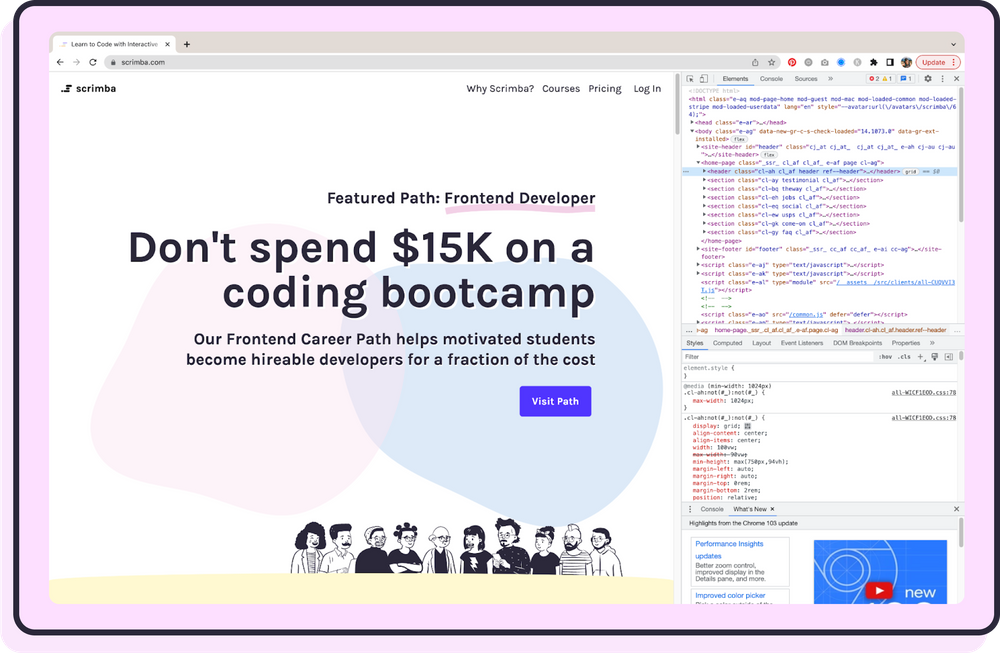

How to practice CSS (with
examples)
What’s the best way to practice CSS? Gradually. Here are five ways to practice CSS plus 12 CSS projects for beginners that you can use to master web design.
You understand CSS, but now you need to practice. You might be wondering, what are CSS best practices? How can I see what I’m doing in the text editor on my broswer in real-time? Where’s the best place to build a free website to practice HTML and CSS?
In my opinion, the best way to get good at CSS is to learn by doing. CSS isn’t something you can learn out of a book or just with a few exercises. CSS is a language. Like any language, you’ll learn it best through repetition in real-world scenarios.
When I first started coding, I loved playing around with Tumblr themes using HTML and CSS. More on this later… First, let’s cover the basics.
What is CSS?
CSS stands for Cascading Style Sheets. To understand what CSS is and how it works, you first need to know what HTML is. HTML is a coding language used to develop websites. HTML is the skeleton of the website. It tells the web browser what content to display, such as text, hyperlinks, images, videos, etc. CSS is used to add style to HTML. You can think of CSS like the clothing of the website. It adds color, layout, simple animations, and typography. CSS can also be used to make a website responsive, that way, it can display correctly on mobile devices and desktops.
Examples of CSS
What can you make with CSS? A better question might actually be, what can you design with CSS? When combined with HTML, you can design emails, websites, and various animations with CSS. Want to see real-world examples of CSS? Take a look at buttons, menus, typography, and layouts of any website you use. Here are some examples of where you might see CSS in real life:
- Styling with typography
- Shaping buttons
- Laying out a website with Flexbox and Grid
- Making beautiful menus
- Applying effects and animations
Replicate your favorite website’s CSS
Modify a template with CSS
Once you’ve looked behind the scenes, it can help to work with a template. You can get inside a professional Frontend Developer’s head through their template. Find a template that you like, then make a few sites with it. There are both free CSS templates and paid CSS templates all over the internet. Try altering a few elements at a time. Study the template and try to understand how and why the template creator marked up the page the way they did. Just make sure whatever template you get has responsive code so that you can practice the all-important media queries!